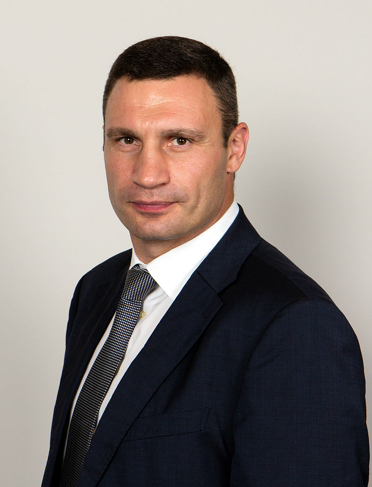

Witalij Wołodymyrowycz Kłyczko – ukraiński bokser wagi ciężkiej i polityk, założyciel partii politycznej Ukraiński Demokratyczny Alians na rzecz Reform, od 5 czerwca 2014 mer Kijowa, od 12 października 2008 do 16 grudnia 2013 roku mistrz świata organizacji WBC w kategorii ciężkiej. W swojej karierze pokonał 15 zawodników o tytuł mistrza świata wagi ciężkiej. Witalij Kliczko stoczył na zawodowym ringu 47 walk. Zwyciężył w 45 pojedynkach (41 KO), poniósł zaledwie dwie porażki. W 2000 roku przegrał pojedynek o mistrzostwo świata organizacji WBO z Amerykaninem Chrisem Byrdem. W czerwcu 2003 roku pokonał go Brytyjczyk, Lennox Lewis, w walce o pasy federacji WBC oraz IBO. Starszy brat innego bokserskiego czempiona, Wołodymyra Kłyczki.
Witalij Kliczko jest jednym z najbardziej utytułowanych pięściarzy w historii boksu. Niektóre z jego najważniejszych osiągnięć:
«A dziś nie każdy może zajrzeć do jutra. A raczej nie tylko każdy może spojrzeć, niewielu może to zrobić»
«Szachy naprawdę są podobne do boksu, choć może się to wydawać mało adekwatne porównanie (śmiech). Przecież już szachownica swoim kształtem przypomina ring. W obu przypadkach decyduje strategia, przygotowanie, początek walki. W boksie podobnie jak w szachach trzeba planować kilka kroków do przodu. Trzeba szukać słabych stron rywala i umieć je wykorzystywać. Bardzo lubię szachy i dużo w nie gram. Także moje dzieci. Z bratem toczymy nawet całodniowe szachowe batalie. Bardzo to lubię.»
«Obiecałem mamie, że nigdy nie będę boksował się z bratem. Jestem pewien, że i milicja nigdy nie wystąpi przeciwko swoim braciom na Majdanie.»